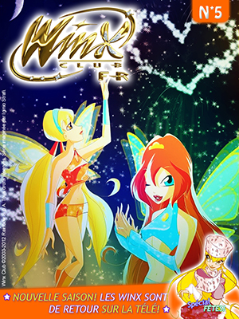
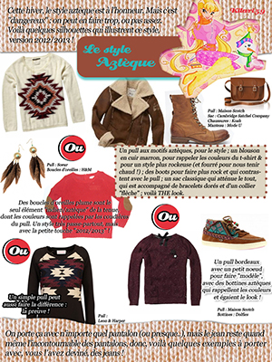
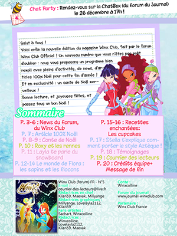
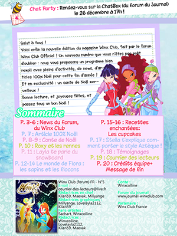
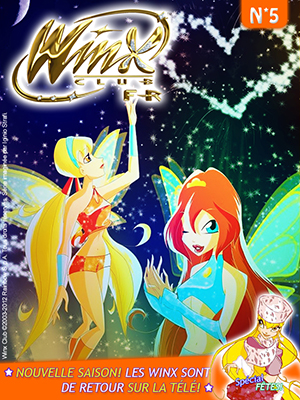
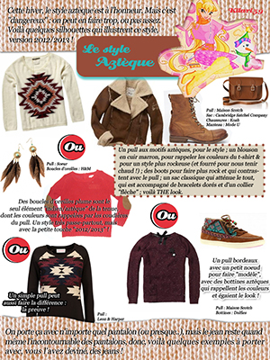
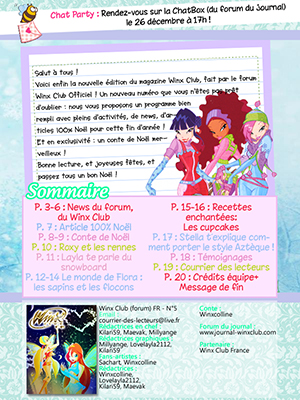

Portfolio
Sophie Nguyen | Paris, France
Expériences
Web magazine
Bien que j'ai honte de le dire, j'ai été très passionnée du dessin animé Winx Club à ma jeunesse. Jusqu'au point de participer à la communauté du forum officiel, où j'étais modératrice. Des membres ont eu l'initiative de créer le premier web journal du forum où j'ai participé activement aux maquettes. Au début, je les concevais sur Photofiltre, un logiciel de montage un peu primitif. Puis sur Photoshop car la création était beaucoup plus aisée et riche en personnalisation. Cette activité
a continué jusqu'en 2014 car le site a décidé de ne plus avoir de forum pour privilégier les réseaux sociaux, donc notre communauté s'est séparée par manque de contact.
Quelques maquettes que j'ai réalisées (sur Photoshop CS5-CS6) :
  


Quelques maquettes que j'ai réalisées (sur Photoshop CS5-CS6) :
 

Stage de 3e
Je l'ai réalisé au sein de l'entreprise pharmaceutique ALK, au siège social à La Défense afin de découvrir le métier d'infographiste. Mon tuteur pratiquait ce métier, il m'a montré comment cela fonctionnait. J'ai pu apprendre des notions comme la charte
graphique, et j'ai appris des bases d'Illustrator. Au sein de ce stage, j'ai réalisé une version Illustrator d'un de mes dessins et une maquette de prospectus destinée aux médecins sur Photoshop.
[Aucun aperçu disponible pour l'instant]
[Aucun aperçu disponible pour l'instant]
Jeu : Puella Magi
J'ai créé mon tout premier jeu internet sur le site Webidev, qui initie au langage php avec son langage simplifié IF. Etant passionnée de l'anime Madoka Magica, je voulais faire un jeu sur ce thème. Il y a eu plusieurs versions
mais celle que j'ai le plus travaillé est celle qui développait un système de combat. On sélectionne un personnage parmi 5 proposés. Chaque personnage a des capacités (attaque, guérison...) et une histoire différente. Le jeu est
resté en bêta puis j'ai abandonné le projet par manque de temps. Le jeu est toujours accessible sur ce lien.
[Aucun aperçu disponible pour l'instant]
[Aucun aperçu disponible pour l'instant]